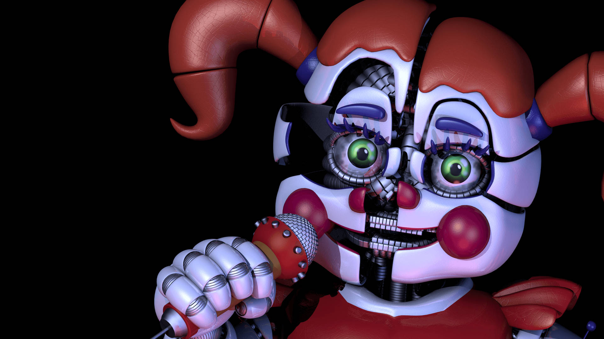
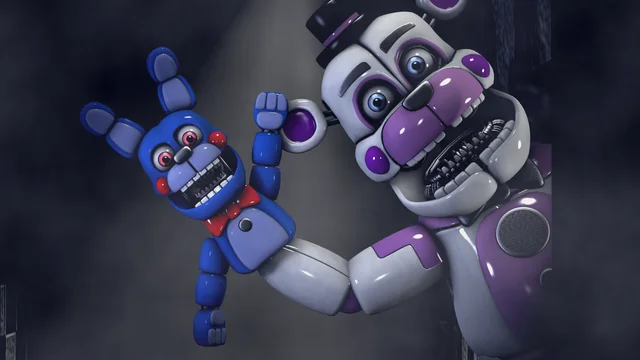
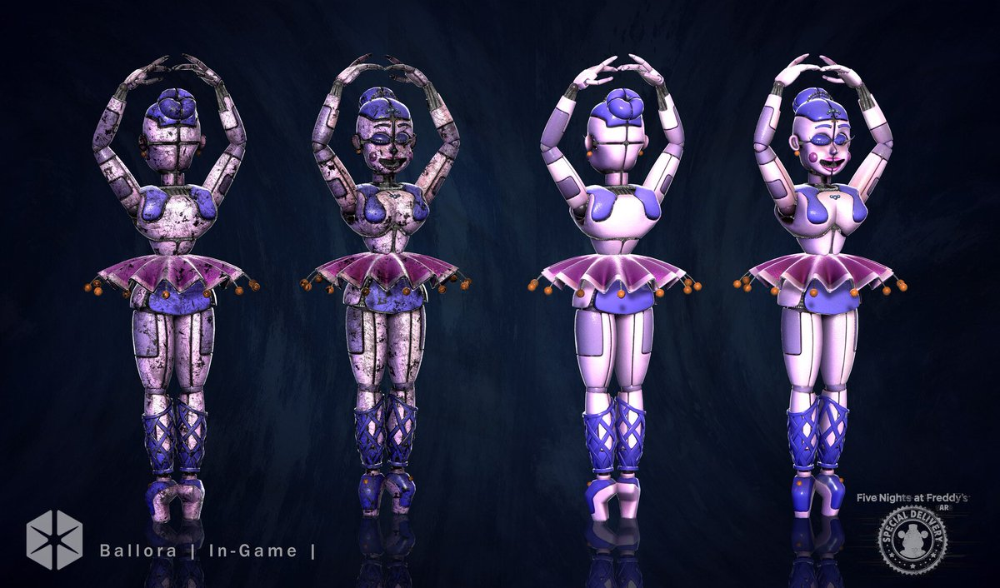

SISTER LOCATION

Beneath the Surface
Deep underground lies a hidden facility built by Afton Robotics. Unlike previous Freddy Fazbear locations, this place was never meant to entertain children openly. Instead, it was designed for experiments involving advanced animatronics.
Facility Overview
Circus Baby’s Entertainment & Rentals is an underground facility designed for the storage, maintenance, and deployment of advanced animatronic units. Unlike traditional Freddy Fazbear’s locations, this complex operates entirely beneath the surface, hidden from public records and outside inspection. The facility is divided into multiple secured sectors, each serving a specific function — from maintenance rooms and control hubs to performance testing chambers. Every animatronic is equipped with internal systems that allow autonomous movement, voice interaction, and remote diagnostics. Despite its advanced engineering, the facility has a documented history of system instability, unauthorized activity, and repeated containment failures. Several units have exhibited unpredictable behavior, especially during off-cycle operation hours. Access to lower levels is strictly restricted. Internal reports suggest that certain sections of the facility remain unaccounted for, with no confirmed mapping or operational data available.
Key Incidents
The facility has been the site of multiple critical incidents, including:
- Unauthorized access by unknown individuals leading to system breaches.
- Multiple animatronic malfunctions resulting in injuries to staff members.
- Unexplained power fluctuations and system overrides during off-hours.
- Documented cases of animatronics exhibiting autonomous behavior outside of programmed parameters.

Circus Baby
Advanced animatronic designed for interaction. Contains the soul of Elizabeth Afton.

Funtime Freddy
Highly interactive animatronic with unstable behavior patterns. Known for unpredictable actions.

Ballora
Elegant performance unit with sound-based navigation system. Operates in complete darkness.
Ennard
Ennard is a fused entity created from multiple animatronics. It represents the collapse of control systems within the facility, where machines begin to act as a single, unstable organism.